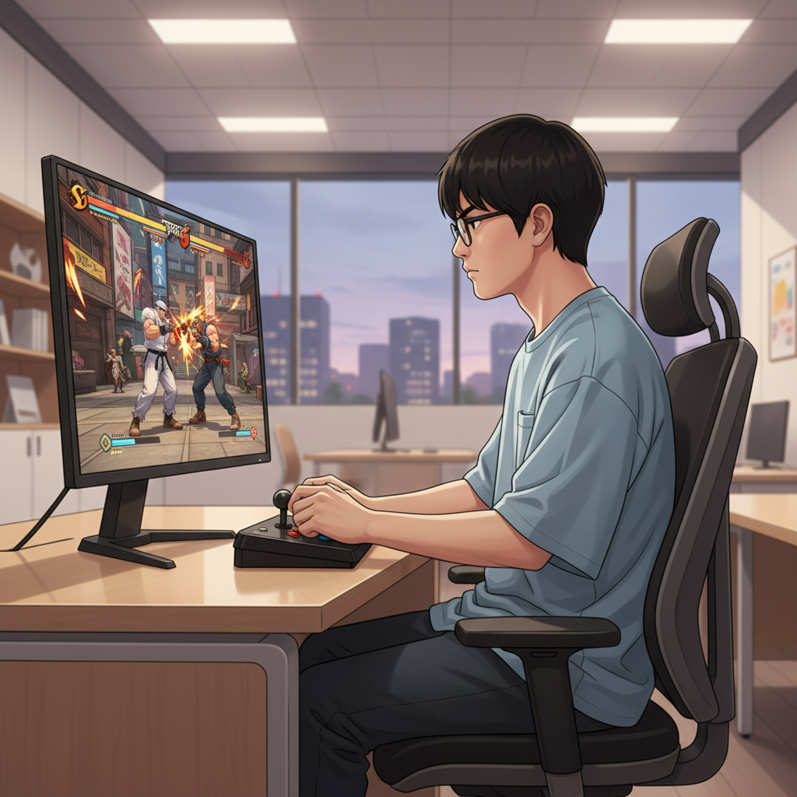
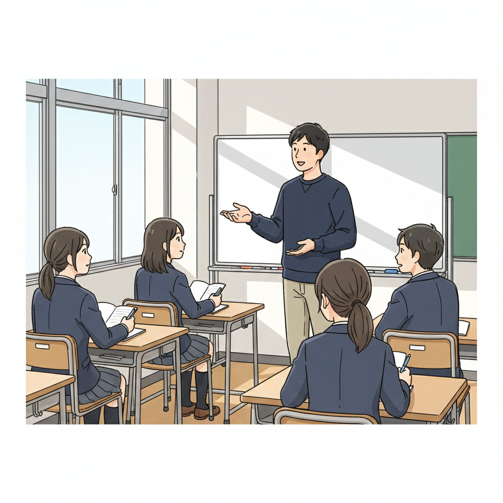
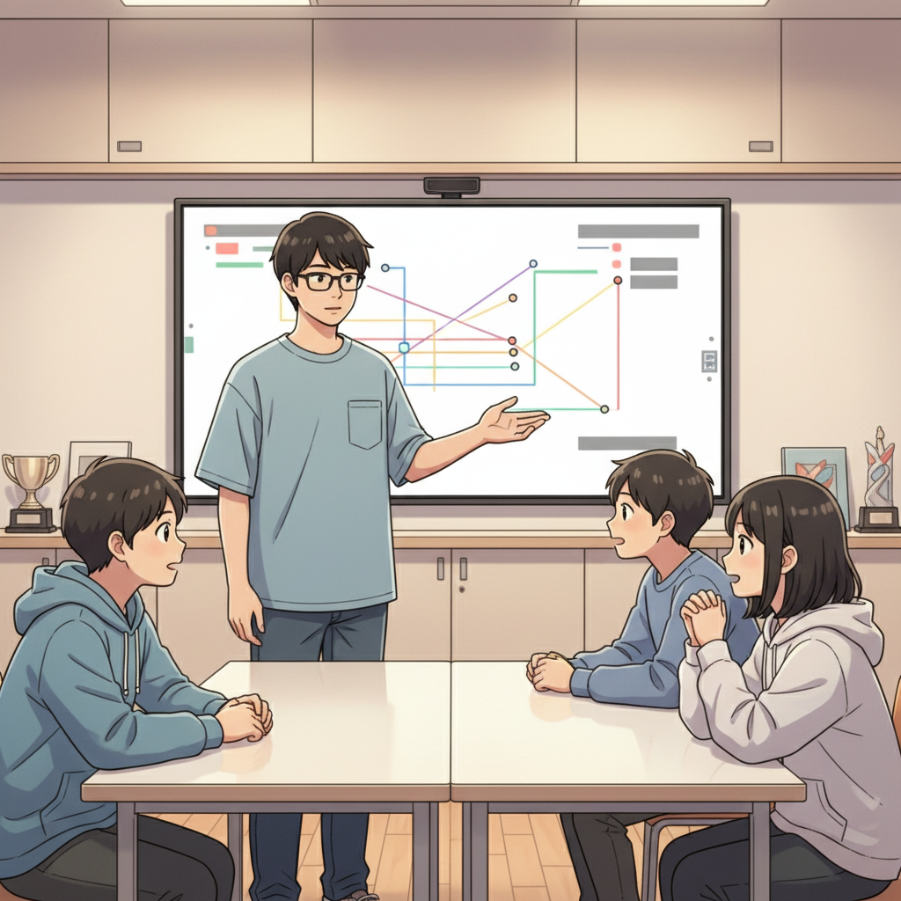

集中力と反応速度が武器に！Y君、スト6の世界へ (Y君)

小さい頃からゲームが好きだったY君。特に格闘ゲームには目がなく、友達と遊ぶのはもちろん、一人で黙々と練習することも大好きでした。でも、学校生活はちょっぴり苦手。周りのペースについていくのが難しかったり、集中しすぎて周りが見えなくなってしまうこともありました。
そんなY君が高校生の時、if塾の塾頭と出会います。塾頭はY君の集中力と驚異的な反応速度に目をつけ、「これはeスポーツの世界で活かせる才能だ！」と確信。ストリートファイター6 (SF6) を勧めたのです。
Y君はSF6に夢中になりました。持ち前の集中力でキャラクターの動きや相手の癖を徹底的に分析。反射神経を活かして、相手の攻撃をギリギリでかわしたり、カウンターを叩き込んだり。まるで水を得た魚のように、才能を開花させていきました。
大会優勝！成功体験が自信につながる (Y君, 塾頭)
if塾でのサポートを受けながら、Y君はメキメキと実力をつけ、ついに大きなeスポーツ大会に出場することになりました。最初は緊張していたY君でしたが、いざ試合が始まると、いつもの集中力を発揮。冷静に相手の動きを見極め、得意のコンボを叩き込みます。
そして、なんとY君は見事優勝！会場は大きな歓声に包まれました。Y君は嬉しさで胸がいっぱいになりながらも、「もっと強くなりたい！」という新たな目標を見つけました。
塾頭はY君の成長を間近で見て、心から喜びました。「Y君の才能は本当に素晴らしい。発達特性は決して『障害』ではなく、大きな『才能』になりうることを証明してくれました」と語ります。
Y君の成功体験は、彼に大きな自信を与えました。以前は不安感が強く、自分に自信が持てなかったY君ですが、今は自分の可能性を信じ、積極的に新しいことに挑戦しています。
if塾での出会いが人生を変える (塾長)

if塾は、Y君のように発達特性を持つ子どもたちが、自分の才能を見つけ、伸ばせる場所です。塾長自身もADHD・ASDの診断を受け、中学時代は特別支援学級に通っていましたが、高校で塾頭と出会い、国立大学に進学しました。
塾長は自身の経験から、「仲間との出会いが人生を変える」と信じています。if塾では、同じような悩みや才能を持つ仲間たちが集まり、互いに刺激し合い、支え合いながら成長しています。発達障害 プログラミングに興味を持つ仲間も多く、刺激的な環境です。
「自分らしい成長の形がある」と塾長は言います。if塾では、一人ひとりの個性を尊重し、その子に合った学習方法や進路を一緒に考えます。特別支援級 大学進学を目指す生徒も支援しています。
発達障害 AI分野に興味を持つ生徒もおり、AI技術を活かした新しい可能性も探っています。
一歩踏み出す勇気を！ (Y君)

Y君は、今では後輩たちの憧れの存在です。自分の経験を語り、後輩たちを励ましています。「最初の一歩を踏み出すのは勇気がいるけど、絶対に無駄にはならない。自分の好きなこと、得意なことを信じて、挑戦してほしい」とY君は語ります。
もしあなたが、自分に自信が持てなかったり、何をやってもうまくいかないと感じているなら、ぜひif塾に遊びに来てください。きっとあなたも、Y君のように、自分の才能を見つけ、輝けるはずです。
if塾は、あなたの「もしも…」を叶える場所です。
🎯 興味を持っていただいた方へ
if塾では、発達特性を持つ子どもたちの「好き」を「才能」に変える教育を行っています。現在の記事内容と実際の活動に大きなズレはありませんが、詳細については直接お問い合わせください。
📌 記事について
この記事は、塾頭による完全自動化への挑戦としてAIが自動生成しています。将来的には塾頭が執筆しているような記事になることを目指しており、現時点では事実と異なる内容が含まれる可能性があります。最新の正確な情報については、お問い合わせフォームよりご確認ください。
🤖 Generated with AI - if塾のブログ自動化プロジェクト